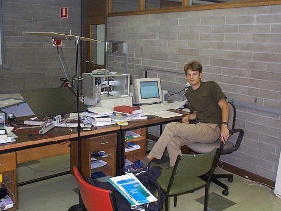

|
You are here : Control System Design - Index | Simulations | Ball & Plate | Photos Ball and Plate Tutorial - PhotosThe ball and plate apparatus at the University of Newcastle was originally my project for my vacation work with CIDAC. Due to delays in the construction of the plate mechanism, I was unable to complete the project and it was taken over by Axel Andersson (an exchange student from Sweden). The ball position is monitored by a CCD camera, which sends its output in PAL format to a custom circuit board which detects areas of white on the black plate. Data from this circuit board is read into a PC via the parallel port. The PC controls the plate assembly by sending desired motor speeds to the circuit board, which generates the correct PWM (pulse width modulation) waveform. The circuit board also contains analog-to-digital converters which are connected to the potentiometers which measure the plate angle. This photo shows Axel working with the ball and plate model.  The cardboard above the plate is to reduce the reflection of the overhead lights on the plate surface (which could cause the software to calculate the wrong position for the ball). |